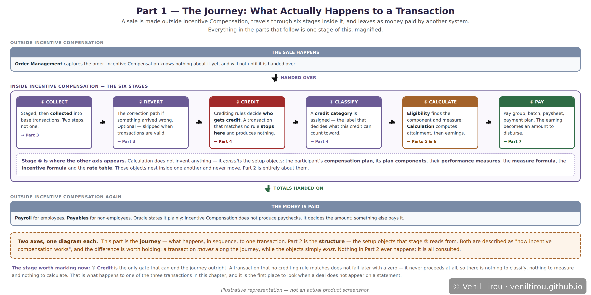
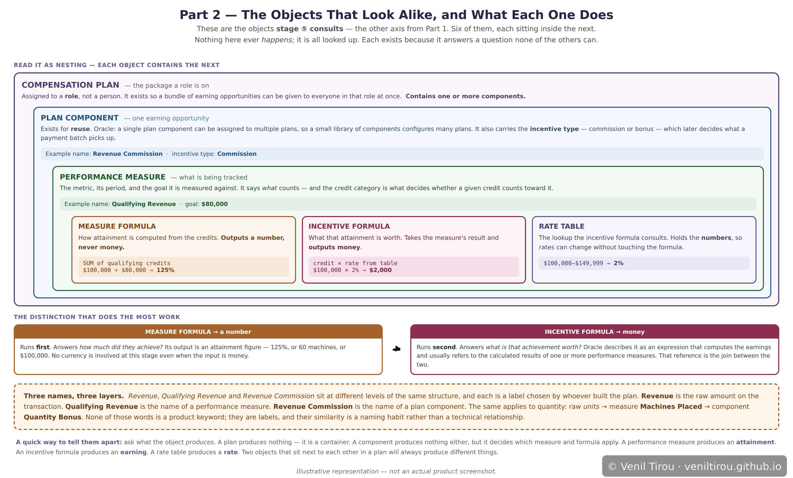
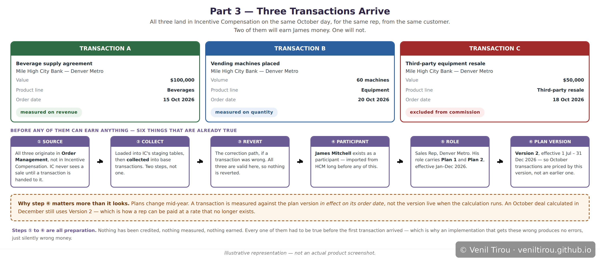
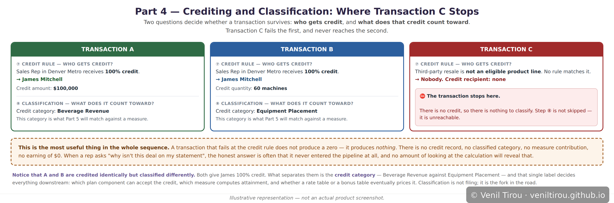
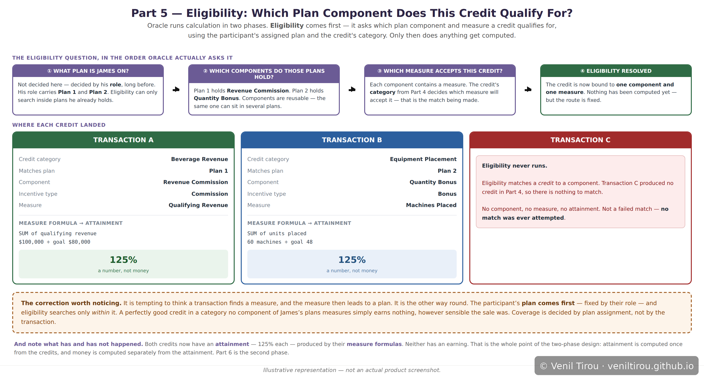
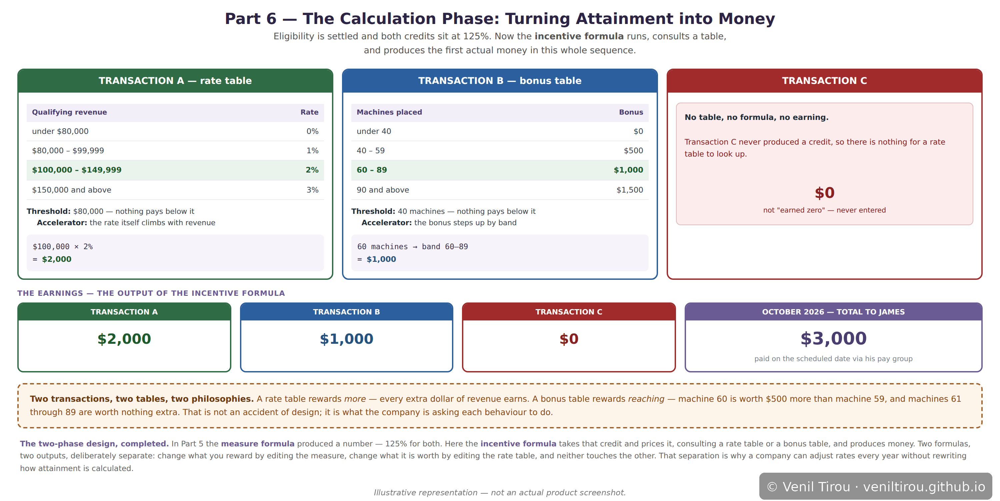
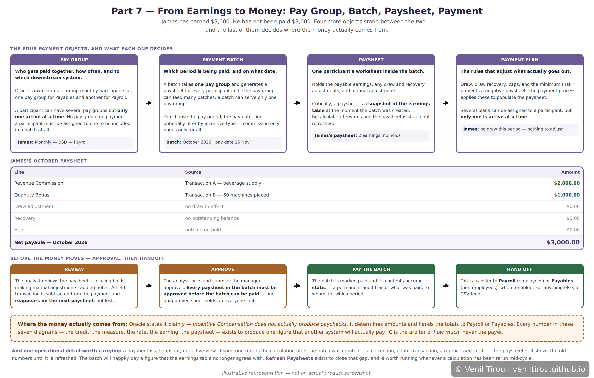

Three Transactions, One Paycheck
Three sales land in Incentive Compensation on the same October week, for the same rep, from the same customer. By the time the month closes, one has become a commission, one a bonus, and one has produced nothing at all. This chapter follows all three through every stage of the pipeline to show why — and, along the way, sorts out the objects that sit closest together and are hardest to tell apart.
Part 1 — The Journey: What Actually Happens to a Transaction

📱 On mobile? Pinch to zoom to read the details clearly.
Two boundaries are worth noticing straight away. Incentive Compensation does not originate the sale, and it does not pay the money. It decides how much, and nothing else.
Stage ③ Credit is drawn in red because it is the only gate that can end the journey outright. A transaction that matches no crediting rule does not continue and produce a zero — it stops, so there is nothing to classify, nothing to measure and nothing to calculate. That is exactly what happens to one of our three, and it is the first place to look when a deal does not appear on a statement.
Part 2 — The Objects That Look Alike, and What Each One Does

📱 On mobile? Pinch to zoom to read the details clearly.
Read it as nesting. A compensation plan is assigned to a role and contains components. A plan component is one earning opportunity, and exists for reuse — Oracle notes that a single component can be assigned to multiple plans, so a small library configures many. It also carries the incentive type, commission or bonus, which later decides what a payment batch picks up. Inside it, a performance measure says what is tracked and against what goal.
The distinction that does the most work is between the two formulas. A measure formula outputs a number — an attainment figure like 125%. An incentive formula outputs money. One answers how much did they achieve, the other what is that achievement worth.
And on the names: Revenue, Qualifying Revenue and Revenue Commission sit at three different levels of the same structure. The first is the raw amount on the transaction, the second is a measure name, the third a component name — each chosen by whoever built the plan.
Part 3 — Three Transactions Arrive

📱 On mobile? Pinch to zoom to read the details clearly.
The one worth dwelling on is the plan version. A transaction is measured against the version in effect on its order date, not the version live when the calculation runs. An October deal calculated in December still uses the version that was current in October — which is how a rep can be paid at a rate that no longer exists.
Part 4 — Crediting and Classification: Where Transaction C Stops

📱 On mobile? Pinch to zoom to read the details clearly.
A and B both give James 100% credit. What separates them is the credit category — Beverage Revenue against Equipment Placement — and that single label decides everything downstream.
Transaction C matches no crediting rule at all, because third-party resale is not an eligible product line. It does not produce a zero. It produces nothing: no credit record, no category, no measure contribution. Steps beyond this point are not skipped for C — they are unreachable.
Part 5 — Eligibility: Which Plan Component Does This Credit Qualify For?

📱 On mobile? Pinch to zoom to read the details clearly.
The order runs plan → component → measure, not the reverse. James's plan is already fixed by his role; eligibility searches only inside it. A perfectly good credit in a category that no component of his plans measures simply earns nothing, however sensible the sale was. Coverage is decided by plan assignment, not by the transaction.
Both credits then run their measure formula and land at 125% attainment — one from $100,000 against an $80,000 goal, the other from 60 machines against a goal of 48. Neither has an earning yet. Attainment is a number, not money.
Part 6 — The Calculation Phase: Turning Attainment into Money

📱 On mobile? Pinch to zoom to read the details clearly.
A rate table rewards more: $100,000 falls in the 2% band and every additional dollar of revenue earns. A bonus table rewards reaching: machine 60 crosses into the $1,000 band, and machines 61 through 89 add nothing further. That is a deliberate design choice about what each behaviour is worth.
The separation of the two formulas is what makes plans maintainable. Change what you reward by editing the measure; change what it is worth by editing the rate table. Neither touches the other, which is how rates can be revised annually without rewriting how attainment is calculated.
Part 7 — From Earnings to Money: Pay Group, Batch, Paysheet, Payment

📱 On mobile? Pinch to zoom to read the details clearly.
A pay group decides who is paid together, how often, and to which downstream system — Oracle's own example groups monthly participants into one pay group for Payables and another for Payroll. A payment batch takes one pay group and a period, and generates a paysheet per participant. The payment plan supplies the rules that adjust what actually goes out: draw, recovery, caps, and the minimum that prevents a negative paysheet.
Where the money actually comes from: Oracle states plainly that Incentive Compensation does not produce paychecks. It determines amounts and hands the totals to Payroll for employees or Payables for non-employees. Every number in the preceding six parts exists to produce one figure that another system will pay.
One operational detail worth carrying: a paysheet is a snapshot of the earnings table at the moment the batch was created, not a live view. Rerun the calculation afterwards and the paysheet shows the old numbers until refreshed.
Why This Chapter Matters
That distinction is the practical value of the chapter. When a rep asks why a deal is not on their statement, the instinct is to check the calculation — but a transaction that never got credited was never calculated, and no amount of examining formulas will reveal it. The question worth asking first is not "is the formula right" but "which gate did this fall at".
The two axes are worth holding separately too. The journey is what happens, in sequence, to a transaction. The structure — plan, component, measure, formulas, rate table — is what the calculation consults. A transaction moves; the objects simply exist. Most of the difficulty in reading an incentive compensation setup comes from looking at one and expecting the other.
Concepts Covered
| Concept | What it means | Part |
|---|---|---|
| The two axes | The journey is what happens in sequence to a transaction. The structure is the set of objects the calculation consults. A transaction moves; the objects simply exist. | 1, 2 |
| Transaction source | Sales originate in Order Management, outside Incentive Compensation. IC knows nothing of a sale until it is handed over. | 1, 3 |
| Collect transactions | Two steps, not one: transactions are staged first, then collected into base transactions. | 1, 3 |
| Revert transactions | The correction path for a transaction that arrived wrong. Optional, and skipped when transactions are valid. | 1, 3 |
| Plan version and effective dates | A transaction is measured against the plan version in effect on its order date, not the version live when calculation runs — so a deal can be paid at a rate that no longer exists. | 3 |
| Crediting rules | Decide who receives credit for a transaction. The only gate that can end the journey outright: a transaction matching no rule produces nothing at all, not a zero. | 1, 4 |
| Credit category and classification | The label assigned to a credit, deciding what it can count toward. Two identically credited transactions with different categories take entirely different routes. | 4 |
| Compensation plan | The package assigned to a role rather than a person. A container for components — it produces nothing itself. | 2, 5 |
| Plan component | One earning opportunity, built for reuse: a single component can be assigned to multiple plans. Carries the incentive type. | 2, 5 |
| Incentive type | Commission or bonus, held on the plan component. Payment batches filter on it, matching exactly against the component's value. | 2, 5, 7 |
| Performance measure | What is being tracked, over what period, against what goal. The credit category decides whether a given credit counts toward it. | 2, 5 |
| Measure formula | How attainment is computed from the credits. Outputs a number — 125%, 60 machines — never money. | 2, 5 |
| Incentive formula | What that attainment is worth. Takes the measure's result and outputs money. The separation from the measure formula is what lets rates change without rewriting attainment logic. | 2, 6 |
| Rate table and bonus table | The lookups an incentive formula consults. A rate table rewards more; a bonus table rewards reaching a band. Holding the numbers separately means rates change without touching formulas. | 6 |
| Eligibility phase | The first phase of calculation: identifies which plan component and measure a credit qualifies for, searching only within the participant's assigned plan. Plan comes first, then component, then measure. | 5 |
| Calculation phase | The second phase: computes attainment from the measure formula, then earnings from the incentive formula and rate. | 5, 6 |
| Pay group | Who is paid together, how often, and to which downstream system. A participant may hold several but only one is active at a time, and without one they cannot appear in a batch. | 7 |
| Payment batch | One pay group, one period, one pay date. Generates a paysheet for every participant in the group. | 7 |
| Paysheet | One participant's worksheet within a batch, holding earnings and adjustments. A snapshot of the earnings table at creation — stale after any recalculation until refreshed. | 7 |
| Payment plan | The rules applied at payment: draw, recovery, caps, and the minimum that prevents a negative paysheet. | 7 |
| Handoff to Payroll or Payables | Incentive Compensation does not produce paychecks. It determines amounts and transfers the totals — Payroll for employees, Payables for non-employees. | 1, 7 |